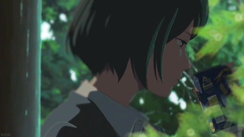
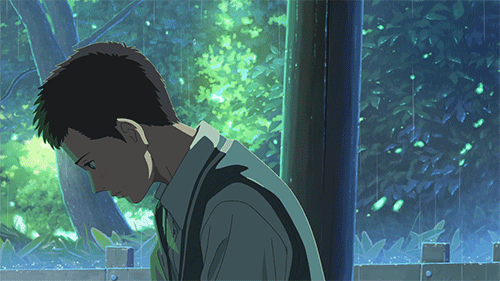
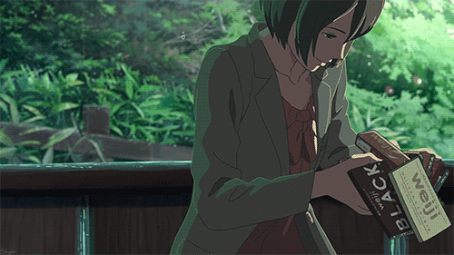

Algumas pessoas festejam e brincam na chuva; outros temem e se escondem na primeira gota. Para o estudante do ensino médio Takao, um banho de verão é uma fonte de inspiração artística... mas quando ele falta à escola para desenhar em um jardim chuvoso, Takao encontra uma musa ainda maior em Yukino, uma mulher mais velha que parece à deriva no mundo. Apesar da diferença de idade e de vida, eles estabelecem um relacionamento confortável que evolui lentamente à medida que se encontram aleatoriamente no mesmo jardim sempre que chove. Mas com a estação das chuvas chegando ao fim, Takao se pergunta se resta tempo suficiente para expressar seus sentimentos em ações e palavras. (Fonte: anilist.co).
Sempre que chovia, Takao e Yukino acabavam se encontrando por ali e, pouco a pouco, eles passam a se conhecer melhor. O enredo gira em torno dessa premissa, principalmente, então podemos dizer que o tema de Kotonoha no Niwa é a chuva. E nesse enredo chuvoso, sobre como os dois de certo modo se completavam: Takao se fascinava por Yukino e pela vida adulta que ela representava, já Yukino via nele as lembranças de uma juventude perdida e os seus erros do seu presente. Os dois se ligavam pelos dias de chuva.
Takao anseia pela maioridade, Yukino se encontra parada no tempo. Ela se torna uma personagem tanto realista quanto fantasiosa, fechando a máxima da idealização de Makoto Shinkai, que disse em uma entrevista que ela representava para ele “todos os segredos do mundo”. (Fonte: garotasgeeks.com - Kotonoha no Niwa - Débora Liao)
Um jovem de 15 anos no primeiro ano do ensino médio. Ele espera se tornar sapateiro e praticar paralelamente enquanto trabalha em meio período.
A misteriosa mulher que Takao conheceu em um dia chuvoso no jardim. Ela passa os dias com chocolate em uma mão e uma cerveja na outra.
Irmão de Takao, ele não tem certeza do que fazer com sua mãe de espírito livre. Ele tem planos de sair de casa e ir morar com a namorada.
Mãe de Takao e Shouta, é uma mulher divorciada de espírito livre que, apesar de amar muito a família, dá mais atenção às suas atividades românticas.
Colega de classe e amigo próximo de Takao.